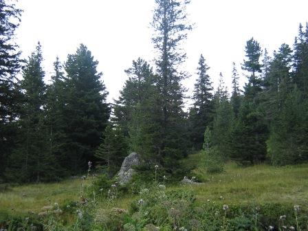
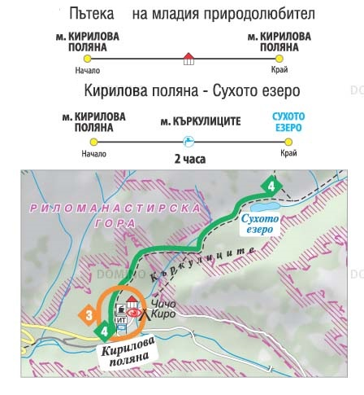
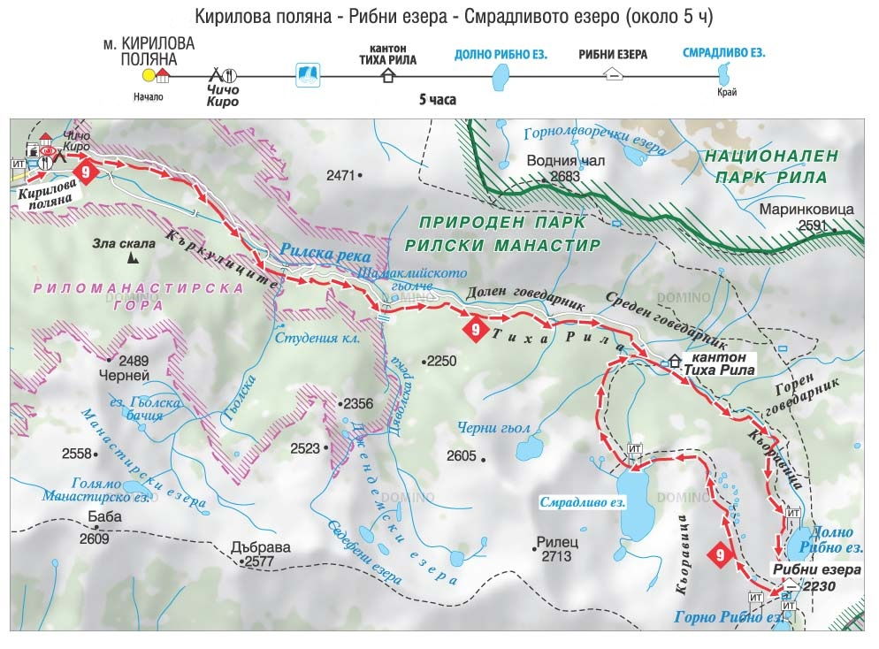

Популярни маршрути

Природен парк “Рилски манастир” е вторият по посещаемост парк в страната ни след Природен парк “Витоша”. През 2007 и 2008 година специалистите, работещи в парковата дирекция, осъществиха Мониторинг на туристическия поток. Благодарение на събраната информация през този двегодишен период, бяха направени редица анализи, които са основополагащи за развитието на различните форми на туризъм на територията на природния парк.
През територията на парка преминават множество пешеходни туристически маршрути с висок интензитет на посещаемост:
- Пътека на младия природолюбител
- Рилски манастир – Кирилова поляна
- Кирилова поляна - Сухото езеро
- Кирилова поляна - Рибни езера - Смрадливото езеро
- Рилски манастир – Мальовица
- Рилски манастир – Седемте Рилски езера
- Рилски манастир – Радовичка река – хижа “Македония”
- Международен туристически маршрут Е -4 Пиринеи – Алпи – Олимп
Тематични образователни маршрути

За любознателните туристи Дирекцията на парка е създала следните тематични образователни маршрута:
- Дендрологичен маршрут “Бачкова чешма - Гробът на св. Иван Рилски”
- Маршрут “Културноисторическото наследство на Рилски манастир”
- Маршрут „В горския дом” (детски кръгов маршрут)
Удобства за туристи

В района на Кирилова поляна и други ключови места са осигурени зони за къмпинг, бунгала, павилиони за хранене, както и места за отдих. Всички маршрути са добре обозначени и маркирани, а информационните табла предоставят полезна информация за туристите.